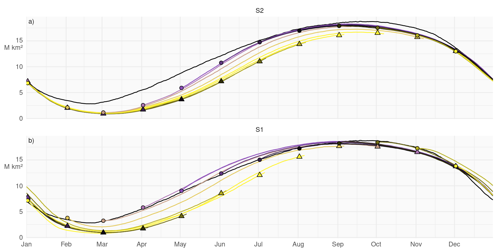
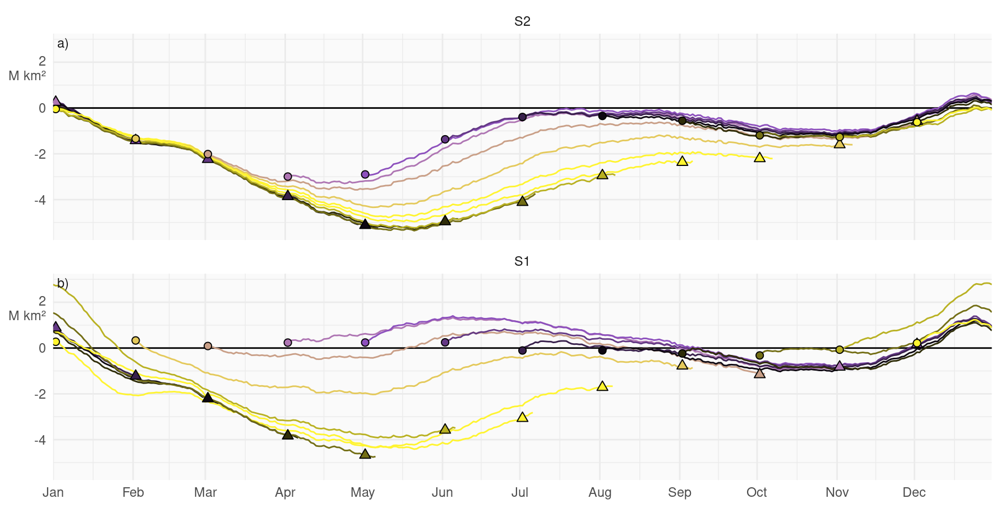
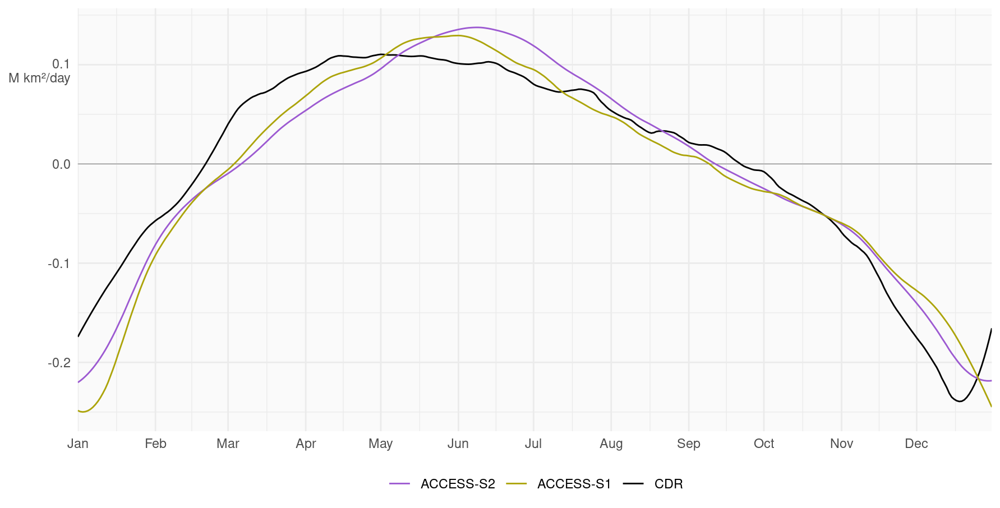
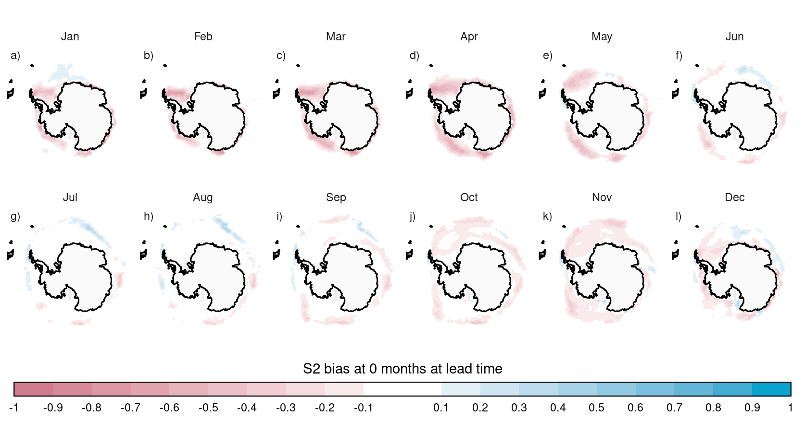
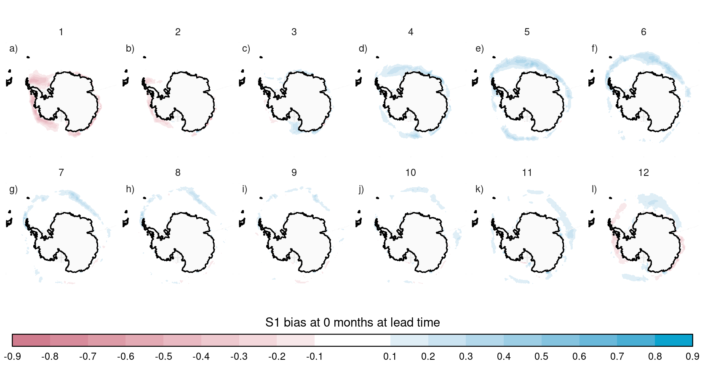
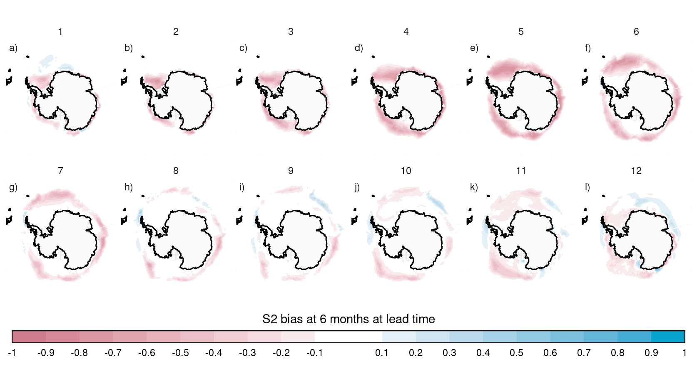
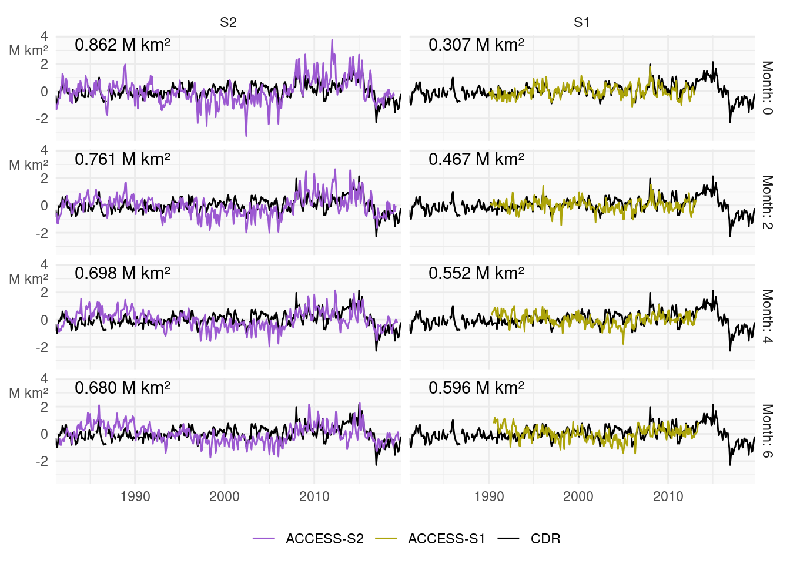
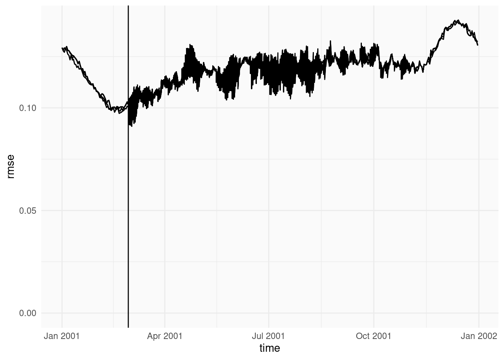
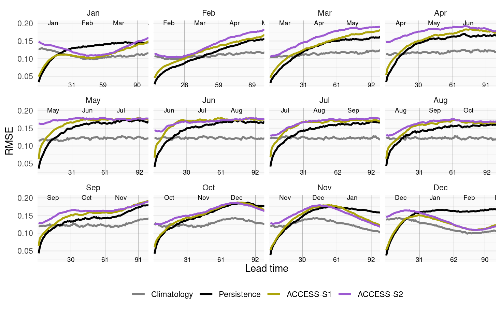

Poster figures
2024-11-11
source(here::here("R/functions.R"))
source(here::here("R/datasets.R"))
source(here::here("R/ggplot.R"))## Warning: Using CDO version 2.4.0 which is different from the version supported by this
## version of rcdo (2.4.3).
## ℹ This warning is displayed once per session.nb_yellow <- gglgbtq::palette_lgbtq("nonbinary")[1] |>
colorspace::darken(0.3)
nb_purple <- gglgbtq::palette_lgbtq("nonbinary")[3]
colours_models <- c(
S2 = nb_purple,
S1 = nb_yellow,
cdr = "black",
persistence = "black",
climatology = "gray50"
)
labels_models <- c(
S2 = "ACCESS-S2",
S1 = "ACCESS-S1",
cdr = "CDR",
bt = "Bootstrap",
era5 = "ERA5",
osi = "OSI",
persistence = "Persistence",
climatology = "Climatology"
)
scale_color_models <- ggplot2::scale_color_manual(NULL,
values = colours_models,
labels = labels_models
)
scale_fill_models <- ggplot2::scale_fill_manual(NULL,
values = colours_models,
labels = labels_models
)
trans_pink <- gglgbtq::palette_lgbtq("transgender")[2] |>
colorspace::darken(0.2)
trans_blue <- gglgbtq::palette_lgbtq("transgender")[1] |>
colorspace::darken(0.2)datasets <- list(cdr = CDR())
which_dataset <- "cdr"Bias
extent_daily <- datasets |>
lapply(extent) |>
lapply(\(x) ReadNetCDF(x, "aice")) |>
rbindlist(idcol = "dataset") |>
_[, let(lon = NULL, lat = NULL)]extent_climatology <- extent_daily |>
copy() |>
_[aice == 0, aice := NA] |>
_[!(month(time) == 2 & mday(time) == 29)] |>
_[, time := update(time, year = 2001)] |>
_[, median_ci(aice), by = .(time, dataset)] hindcast_extent <- fread(here::here("data/derived/hindcast_extent.csv")) |>
_[, model := relevel(factor(model), "S2")] |>
_[, lag := as.numeric(as.Date(time) - as.Date(forecast_time))] |>
_[lag > 0] |>
_[!(month(forecast_time) == 1 & member == 7 & model == "S1")] # This member is wrongcm <- 2.54hindcast_extent |>
_[, median_ci(aice), by = .(forecast_time = update(forecast_time, year = 2001),
lag = as.numeric(as.Date(time) - forecast_time),
model)] |>
_[, time := forecast_time + lag] |>
_[, time2 := update(time, year = 2001)] |>
_[, month := lubridate::month(forecast_time, label = TRUE)] |>
# _[]
ggplot(aes(time2, mid)) +
geom_line(data = extent_climatology[dataset == which_dataset],
aes(x = as.Date(time),
group = dataset)) +
geom_line(aes(color = month, group = interaction(forecast_time, time != time2))) +
geom_point(data = \(x) x[mday(time) == 2, .SD[which.max(lag)], by = .(forecast_time, model)],
aes(fill = month),
shape = 24, size = 2.2) +
geom_point(data = \(x) x[lag == 1], aes(fill = month),
shape = 21, size = 2) +
scale_x_date(NULL, date_breaks = "1 month",
date_labels = "%b", expand = c(0, 0)) +
scale_y_continuous(NULL, labels = labels_extent) +
scale_color_manual(values = colorRampPalette(gglgbtq::palette_lgbtq("nonbinary")[c(1, 3, 4, 1)])(12),
aesthetics = c("fill", "color"), guide = "none") +
facet_wrap(~ model, ncol = 1) +
tag_facets() ## Warning in eval(bysub, x, parent.frame()): Incompatible methods ("-.Date",
## "-.IDate") for "-"

Median sea ice extent for al hindcasts initialised the first of the month for +S2 and +S1 in colours representing the start month. In black, the median sea ice extent of +CDR.
hindcast_extent |>
_[, median_ci(aice), by = .(forecast_time = update(forecast_time, year = 2001),
lag = as.numeric(as.Date(time) - forecast_time),
model)] |>
_[, time := forecast_time + lag] |>
_[, time2 := update(time, year = 2001)] |>
_[, month := lubridate::month(forecast_time, label = TRUE)] |>
_[copy(extent_climatology)[, time := as.Date(time)], on = c(time2 = "time")] |>
_[] |>
ggplot(aes(time2, mid - i.mid)) +
geom_hline(yintercept = 0) +
geom_line(aes(color = month, group = interaction(forecast_time, time != time2))) +
geom_point(data = \(x) x[mday(time) == 2, .SD[which.max(lag)], by = .(forecast_time, model)],
aes(fill = month),
shape = 24, size = 2.2) +
geom_point(data = \(x) x[lag == 1], aes(fill = month),
shape = 21, size = 2) +
scale_x_date(NULL, date_breaks = "1 month",
date_labels = "%b", expand = c(0, 0)) +
scale_y_continuous(NULL, labels = labels_extent) +
scale_color_manual(values = colorRampPalette(gglgbtq::palette_lgbtq("nonbinary")[c(1, 3, 4, 1)])(12),
aesthetics = c("fill", "color"), guide = "none") +
facet_wrap(~ model, ncol = 1) +
tag_facets() ## Warning in eval(bysub, x, parent.frame()): Incompatible methods ("-.Date",
## "-.IDate") for "-"
dif_hindcast <- hindcast_extent |>
copy() |>
_[order(time)] |>
_[, dif := c(NA, diff(aice)/diff(as.numeric(as.Date(time)))), by = .(model, forecast_time, member)] |>
_[, median_ci(dif), by = .(model, time = update(time, year = 2000))]
extent_daily |>
_[order(time)] |>
_[, dif := c(NA, diff(aice)/diff(as.numeric(as.Date(time)))), by = .(dataset)] |>
_[, median_ci(dif), by = .(dataset, time = update(time, year = 2000))] |>
_[dataset == which_dataset] |>
ggplot(aes(time, mid)) +
geom_hline(yintercept = 0, color = "gray50", linewidth = 0.2) +
geom_smooth(aes(group = dataset, color = dataset),
span = 30/366, linewidth = 0.5, se = FALSE, n = 366) +
geom_smooth(data = dif_hindcast,
aes(color = model), span = 30/366, linewidth = 0.5, se = FALSE, n = 366) +
scale_x_datetime(NULL, date_breaks = "1 month",
date_labels = "%b", expand = c(0, 0)) +
scale_y_continuous(NULL, labels = \(x) labels_extent(x, units = "M km²/day")) +
theme(legend.position = "inside", legend.position.inside = c(0.9, 0.9),
legend.direction = "vertical") +
scale_color_models## `geom_smooth()` using method = 'loess' and formula = 'y ~ x'
## `geom_smooth()` using method = 'loess' and formula = 'y ~ x'
zeropad <- function(x, n = 2) formatC(x, width = 2, flag = "0")
monnb <- function(d) { lt <- as.POSIXlt(as.Date(d, origin="1900-01-01"));
lt$year*12 + lt$mon }
month_differnece <- function(d1, d2) { monnb(d2) - monnb(d1) }
month_diff <- function(month1, month2) {
d <- (month2 - month1)
(d %% 12)
}
months <- 1:12
hindcast_clim <- purrr::pmap(CJ(month = 1:12, version = c("S2", "S1")), \(month, version) {
here::here(glue::glue("data/derived/climatology/{version}/{zeropad(month)}/em.nc")) |>
# cdo_selmonth(month) |>
cdo_monmean() |>
cdo_execute() |>
ReadNetCDF("aice") |>
_[, let(forecast_month = month,
version = version)]
}) |>
rbindlist() |>
_[, forecast_month := as.numeric(forecast_month)] |>
_[, forecast_time := update(time, month = forecast_month)] |>
_[, time := as.Date(update(time, day = 1))]
obs_clim <- CDR() |>
climatology() |>
cdo_ymonmean() |>
cdo_execute() |>
ReadNetCDF(c(obs = "aice")) |>
_[, time := as.Date(update(time, day = 1))]
hindcast_clim <- hindcast_clim |>
merge(obs_clim) |>
_[, month := month(time)] |>
_[, month_diff := month_differnece(time[1], forecast_time[1]), by = .(forecast_month, time)]
hindcast_clim[, month_diff := month_diff(forecast_month[1], month[1]), by = .(forecast_month, month)]bias_plot <- function(hindcast_clim, which_version, which_lead) {
hindcast_clim |>
_[version == which_version] |>
_[month_diff == which_lead] |>
# dcast(time + xgrid + ygrid ~ model, value.var = "aice") |>
# setnames(which_dataset, "obs") |>
ggplot(aes(xgrid, ygrid)) +
geom_contour_fill(aes(z = aice - obs, fill = after_stat(level)),
breaks = AnchorBreaks(binwidth = 0.1, exclude = 0)) +
# geom_contour2(aes(z = aice - obs), breaks = AnchorBreaks(binwidth = 0.1, exclude = 0),
# linewidth = 0.1) +
scale_fill_divergent_discretised(paste0(which_version, " bias at ", which_lead, " months at lead time"),
low = trans_pink,
high = trans_blue) +
geomcoord_antarctica +
geom_antarctica_fill +
facet_wrap(~ month,
labeller = labeller(month = setNames(months, month.abb)),
nrow = 2) +
wide_legend +
tag_facets()
}width_bias <- 22.15/cm
height_bias <- 12.3/cmhindcast_clim |>
bias_plot("S2", 0)
hindcast_clim |>
bias_plot("S1", 0)
lead
hindcast_clim |>
bias_plot("S2", 6)
hindcast_clim |>
bias_plot("S1", 6)
Anomalies
months_difference <- function(x, y) {
lubridate::interval(y, x) %/% months(1)
}
monthly_extent <- extent_daily |>
_[dataset == which_dataset] |>
_[aice == 0, aice := NA] |>
_[, .(aice = mean(aice)), by = .(dataset, time = as.Date(round_date(time, "month")))] |>
_[, aice := Anomaly(aice, year(time) %between% c(1981, 2011), na.rm = TRUE),
by = .(month(time), dataset)]
N <- uniqueN(monthly_extent$time)
s1_range <- hindcast_extent[model == "S1"][, range(time)]
s2_range <- hindcast_extent[model == "S2"][, range(time)]
hindcast_extent |>
copy() |>
_[, aice := aice - mean(aice[year(time) %between% c(1981, 2011)]),
by = .(lag, model, time = update(time, year = 2000))] |>
_[, .(forecast = mean(aice)), by = .(model, forecast_time, time = as.Date(round_date(time, "month")))] |>
_[, lag := months_difference(time, forecast_time)] |>
_[, merge(.SD, monthly_extent, all = TRUE), by = .(model, lag)] |>
_[lag %in% (c(1, 3, 5, 7) - 1)] |>
_[time %between% s2_range] |>
ggplot(aes(time)) +
geom_line(aes(y = aice, group = dataset, color = dataset)) +
geom_line(aes(y = forecast, color = model)) +
geom_text(data = \(x) x[time %between% s1_range,
.(text = sqrt(mean((aice - forecast)^2, na.rm = TRUE))), by = .(lag, model)],
aes(label = paste0(scales::number(text, scale = 1e-12), " M km²")), x = -Inf, y = Inf,
vjust = 1.2, hjust = -0.2) +
scale_y_continuous(NULL,
labels = labels_extent) +
scale_x_date(NULL, expand = c(0, 0)) +
facet_grid(lag ~ model, labeller = labeller(lag = \(x) paste0("Month: ", x))) +
scale_color_models## Warning: Removed 184 rows containing missing values or values outside the scale range
## (`geom_line()`).

Sea ice extent anomalies for +S1 and +S2 (black) and +CDR (blue).
RMSE
errors <- rbind(
readRDS(here::here("data/derived/rmse.Rds")),
readRDS(here::here("data/derived/iiee.Rds"))
) |>
_[value < 0.01, value := NA] |>
_[value > 3e13, value := NA] |>
_[, time := as.Date(time)] |>
_[, lag := as.numeric(time - time_forecast)] |>
_[lag > 0] |>
_[!(month(time_forecast) == 1 & member == "07" & version == "S1")] # This member is wrongclim_std <- datasets |>
lapply(\(x) x |>
anomalies() |>
cdo_sqr() |>
cdo_fldmean() |>
cdo_sqrt() |>
cdo_execute() |>
ReadNetCDF(c(climatology = "aice")) |>
_[, let(lat = NULL, lon = NULL)]
) |>
rbindlist(idcol = "obs_dataset") |>
_[, time := as.Date(time)] |>
_[climatology == 0, climatology := NA] |>
_[climatology < 0.05, climatology := NA] clim_std2 <- clim_std[errors, on = .NATURAL] |>
_[, let(climatology = NULL,
value = climatology)] |>
na.omit() |>
_[, version := "climatology"]month_from_lag <- function(day = 1, step = 2) {
force(day)
force(step)
function(x) {
unique(x[, .(lag, month)])[, time := make_date(month = month, day = 1) + lag] |>
_[mday(time) == day, .(lag, month,
month2 = lubridate::month(time, label = TRUE)
)] |>
_[, .SD[((seq_len(.N) + 1) %% step) == 0], by = month]
}
}
g <- clim_std2 |>
rbind(errors) |>
_[obs_dataset == which_dataset] |>
_[measure == "rmse"] |>
_[, time2 := update(time, year = 2000)] |>
_[, median_ci(value),
by = .(lag, version, measure, month(time_forecast), obs_dataset)] |>
ggplot(aes(lag, mid)) +
geom_vline(data = month_from_lag(1, 1), aes(xintercept = lag),
colour = "gray50", linewidth = 0.1) +
geom_text(data = month_from_lag(15, 1), aes(y = Inf, label = month2),
size = 2.5,
vjust = 1) +
geom_text(data = month_from_lag(1, 1), aes(y = -Inf, label = lag),
size = 2.5,
vjust = 0) +
geom_ribbon(aes(ymin = low,
ymax = high,
color = version,
fill = version,
group = interaction(obs_dataset, version)),
alpha = 0.1) +
geom_line(aes(color = version, group = interaction(obs_dataset, version)), linewidth = 1) +
scale_x_continuous(breaks = NULL, expand = c(0, 0)) +
labs(y = "RMSE",
x = "Lead time") +
scale_color_models +
scale_fill_models +
facet_wrap(~ month, labeller = labeller(month = labels_month)) width_errors <- 19.43/cm
height_errors <- 11.99/cmg %+% g$data[version != "climatology"]g %+% g$data[version != "persistence"]# ACHTUNG: we have something going on with the 29th of february.
clim_std2 |>
rbind(errors) |>
_[measure == "rmse"] |>
_[obs_dataset == which_dataset] |>
_[, .(rmse = median(value, na.rm = TRUE)),
by = .(time = update(time, year = 2001),
time_forecast = update(time_forecast, year = 2001),
lag,
version)] |>
# _[version == "climatology"] |>
ggplot(aes(time, rmse)) +
geom_line(data = \(x) x[version == "climatology"],
aes(group = interaction(time_forecast, month(time_forecast) <= month(time)))) +
# geom_line(data = \(x) x[version == "S2"],
# aes(color = factor(month(time_forecast)),
# group = interaction(time_forecast, month(time_forecast) <= month(time)))) +
# geom_point(data = \(x) x[version == "S2" & lag ==1], aes(color = factor(month(time_forecast)))) +
scale_color_manual(values = colorRampPalette(gglgbtq::palette_lgbtq("nonbinary")[c(1, 3, 4, 1)])(12),
aesthetics = c("fill", "color"), guide = "none") +
scale_y_continuous(limits = c(0, NA)) +
geom_vline(xintercept = as.Date("2001-02-28"))
p <- g +
coord_cartesian(xlim = c(0, 100))
p$layers <- p$layers[-4]
p## Warning: No shared levels found between `names(values)` of the manual scale and the
## data's fill values.
topo_lonlat <- rcdo::cdo_topo(grid = "r180x90") |>
rcdo::cdo_execute(options = c("-f nc")) |>
metR::ReadNetCDF(c(z = "topo"), subset = list(lat = c(-90, -60))) |>
ggperiodic::periodic(lon = c(0, 360)) rmse_lon_mean <- here::here("data/derived/rmse_lon.Rds") |>
readRDS() |>
_[version != "S1"] |>
_[, lag := as.numeric(as.Date(time) - time_forecast)] |>
_[, base := value[version == "persistence"],
by = .(time, lon, lag, obs_dataset)] |>
_[version != "persistence"] |>
_[, .(dif = median(value - base, na.rm = TRUE)),
by = .(lag, lon, version, obs_dataset, month = factor(month(time_forecast)))]topo_inset <- list(topo_lonlat) |>
rep(4) |>
rbindlist(idcol = "month") |>
ggplot(aes(lon, lat)) +
geom_contour_fill(aes(z = z),
breaks = c(0, Inf), fill = "gray90") +
geom_contour2(aes(z = z),
breaks = 0) +
facet_wrap(~month, labeller = labeller(mohth = rep("", 4)), nrow = 1) +
scale_y_latitude(limits = c(-90, -60)) +
scale_x_longitude(ticks = 60, expand = c(0.08, 0)) +
theme_void() +
theme(strip.background = element_blank(),
strip.text = element_blank(),
aspect.ratio = 0.1,
plot.margin = margin(c(-50, 0, 0, 0)))
theme_margin <- theme_get()$plot.margin
theme_margin[3] <- margin(-10)[1]
binwidth <- 0.02
rmse_lon_mean |>
_[obs_dataset == which_dataset] |>
# _[month %in% 1:4] |>
ggperiodic::periodic(lon = c(0, 360)) |>
ggplot(aes(lon, lag)) +
geom_contour_fill(aes(z = dif, fill = after_stat(level)),
breaks = AnchorBreaks(0, exclude = 0, binwidth = binwidth)) +
geom_contour_tanaka(aes(z = dif), range = c(0.01, 0.4),
breaks = AnchorBreaks(0, exclude = 0, binwidth = binwidth)) +
geom_hline(data = month_from_lag(1, 1), aes(yintercept = lag),
colour = "gray50", linewidth = 0.1) +
geom_text(data = month_from_lag(15, 1), aes(x = 361, label = month2),
size = 2.5,
hjust = 0) +
geom_text(data = month_from_lag(1, 1), aes(x = -2, label = lag),
size = 2.5,
hjust = 1) +
# scale_fill_divergent_discretised() +
scale_fill_divergent_discretised(high = trans_pink,
low = trans_blue) +
scale_x_longitude(ticks = 60, expand = c(0.08, 0)) +
scale_y_continuous(breaks = NULL, expand = c(0, 0)) +
labs(fill = NULL,
y = "Lead time") +
wide_legend +
facet_wrap(~ month, labeller = labeller(month = labels_month)) +
theme(panel.background = element_blank(),
tagger.panel.tag.background = element_rect(colour = "white", fill = "white"),
plot.margin = theme_margin) +
tag_facets(position = list(x = 0.08, y = 1, hjust = 0, vjust = 1)) +
topo_inset +
plot_layout(ncol = 1, guides = "collect", heights = c(10, 1), axes = "collect")
Meadian difference between RMSE of +S2 forecasts and persistence forecast at longitudinal bands.